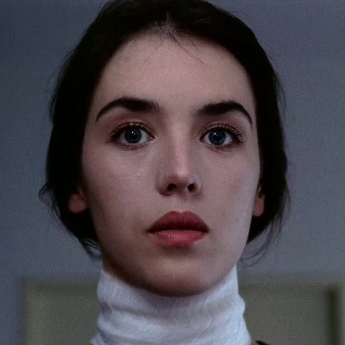
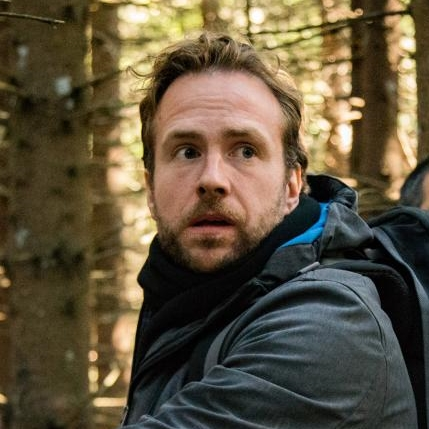
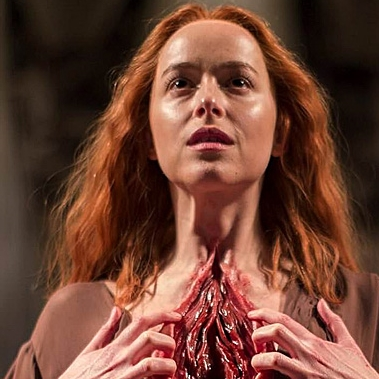
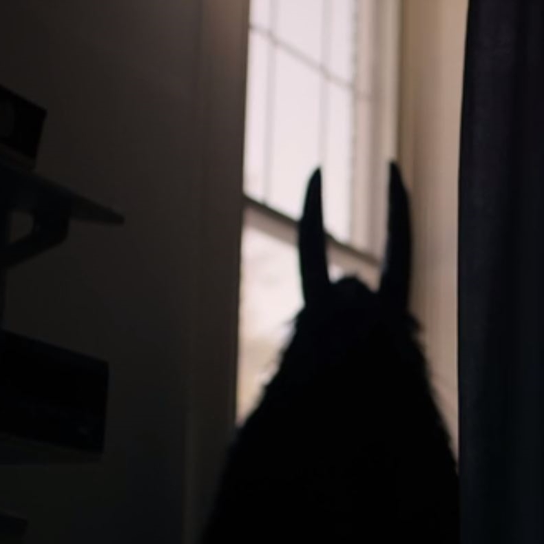

| Bewertung | |
|---|---|
|  | Anna, Berlinreise
Die Probleme die ich damals hatte, erscheinen auf einmal so weit weg... eine lieblose Ehe, ein ungeliebtes Kind. Der Krieg war so nah. Was ich in Berlin erlebte, erweckte meine Leidenschaft. Ich entdeckte mich neu. Als damals eine Frau vor meiner Tür stand die aussah wie ich, obwohl ich keine Zwillingsschwester habe, wusste ich, wir sind bereit. Die Zeit der Dämonen war gekommen. 5 von 5 Sternen |
|  | Luke, Rucksackreise Norwegen
Ich dachte, ich sterbe hier. Also ich brauche das nicht noch mal! Alle meine Freunde sind tot! Aber ich habe ein riesiges Gottmonster überlebt. Ein bisschen cool war das schon. Schade dass ihr eine Klausel in den Verträgen habt, dass ihr keine Therapiekosten übernehmt. 2 von 5 Sternen |
|  | Susie Bannion, Tanzakademie Berlin Vielleicht hat mich auf dieser Reise etwas anderes gefunden. Ich träume nachts immernoch von Widerhaken und Blut. Um die Ecke ist auch ein super Pizzaladen. Ich mag Berlin und Dämonen, und tanzen kann ich jetzt auch! 4 von 5 Sternen |
|  | Dämonenähnlicher Schatten, Mädcheninternat Amerika Hallo, mein Name ist Horst. Ich bin 60 Äonen alt. Benutze ich diese Website hier richtig? Dieser Elektrikquatsch ist so kompliziert. Naja, alle meine Kinder sind seit 40 Äonen aus dem Haus. Ich habe mitbekommen dass in eurer parallelwelt ein Mädchen im Internat wohnt, dessen Eltern gestorben sind. Das fand ich sehr traurig. In den Ferien habe ich angefangen, über den Kamin im Keller mit ihr zu kommunizieren. Ich habe sie dann ein paar Monate groß gezogen, bevor wir durch einen Exorzismus getrennt wurden. Das fand ich sehr schade. Ich habe sie seitdem nicht mehr finden können. Kat, melde dich wenn du das liest (emailvonhorst@dämonenmail.höl)! Eigentlich habe ich keine Reise hier gebucht da ich selbst durch Raum und Zeit reisen kann, aber ich finde es toll dass ihr Dämonen an Menschen vermittelt. Macht weiter so. 5 von 5 Sternen von Horst |
 |
Kat, Mädcheninternat Amerika Hallo, ich war ein paar Jahre am Mädcheninternat in Amerika. Dieses Angebot habe ich über eure Website gefunden. Es war schön dort. So habe ich auch meinen Ziehvater Horst getroffen, der leider aber gegangen ist. Danke für die schöne Zeit. 4 von 5 Sternen |